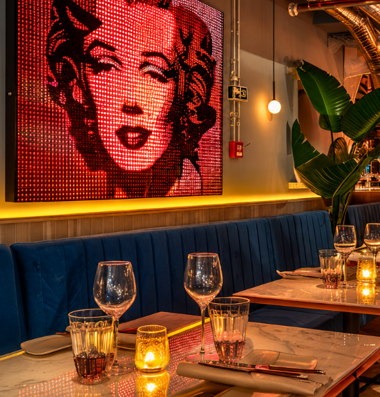
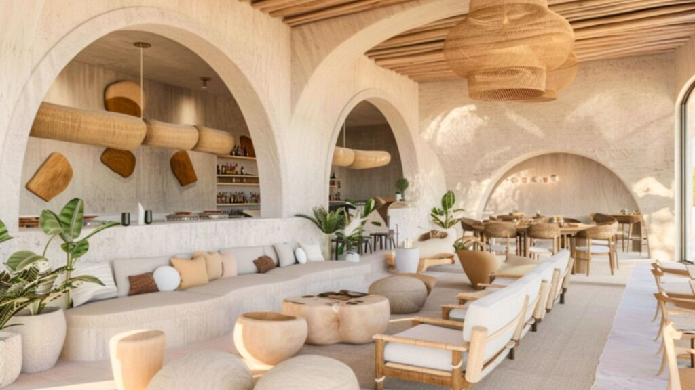
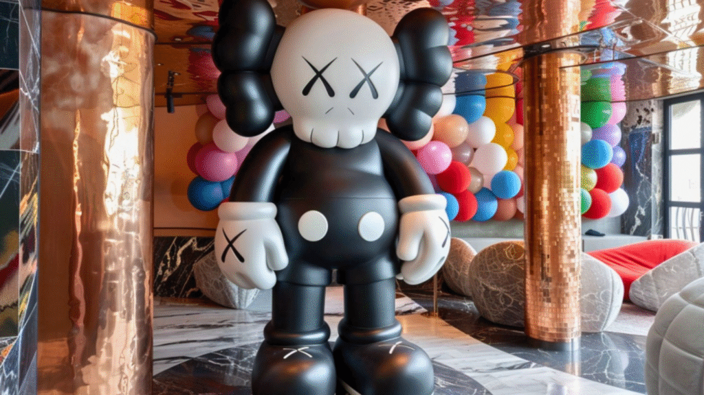
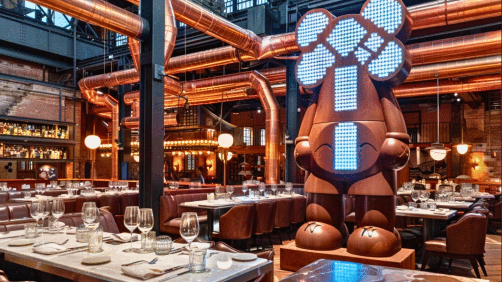

Greetings, restaurant owners. Let’s explore the future of your business—where Gen Z is set to redefine the market. Born between 1997 and 2012, this generation is reshaping consumer trends, especially in food and beverage. With 48% of India’s eating-out and ordering-in spends already driven by Gen Z, ignoring their preferences means missing out on nearly half your potential customers. But how do you design a restaurant experience that speaks to them? Let’s break it down.
1. Authenticity is Non-Negotiable

Gen Z craves realness. They value brands that are transparent, genuine, and unafraid to show vulnerability. For restaurants, this means:
- Tell Your Story: Share the inspiration behind your menu. Was your grandma’s recipe the foundation of your best-selling dish? Highlight it!
- Local & Sustainable: Source ingredients locally and promote eco-friendly practices. Gen Z cares about ethics—69% of them actively support causes like sustainability.
- Embrace Imperfections: Don’t over-polish your branding. A quirky, relatable vibe (think handwritten specials or staff stories) resonates more than sterile perfection.
Pro Tip: Take a cue from Bombay to Barcelona Library Cafe’s inspiring story. His café stands as a testament to his resilience and commitment to uplifting Mumbai’s street children.
2. Visuals Rule: Create an Instagrammable Experience

Gen Z lives through their camera lens. Over 77% prefer immersive visuals like AR filters and photo-worthy setups. Design your space to be shareable by:
- Colourful & Bold Interiors: Think vibrant walls, neon signs, or themed décor.
- Interactive Elements: Photo booths with quirky props, AR menus (Snapchat-style lenses to “see” dishes), or mural walls tagged with your restaurant’s handle.
- Plating as Art: Even a simple sandwich becomes Insta-worthy with creative presentation.
Pro Tip: Collaborate with local digital artists to create seasonal visual campaigns. For example, experiment with shifting your décor’s vibe—bright and lively in the morning, and sleek and modern by night—to continuously engage Gen Z’s ever-changing tastes.
3. Social Spaces = Shopcializing
Gen Z doesn’t just eat—they socialize. Their “inner circle” (close friends/family) heavily influences decisions. Design your layout to encourage group interactions by:
- Communal Tables: Large tables for group orders or shared platters.
- Co-Working Corners: Offer free Wi-Fi and charging ports. Many Gen Zers blend meals with study/work sessions.
- Live Experiences: Host pop-up events (taco Tuesdays, DIY pizza nights, Coffee Rave) or collaborate with micro-influencers for takeovers.
Pro Tip: Consider hosting community events that double as social gatherings. A well-organized live music night or a themed dinner can spark conversation and naturally boost word-of-mouth among Gen Z groups.
4. Tech-Savvy & Seamless
Gen Z are digital natives who toggle between online and offline effortlessly. Integrate tech to streamline their journey with:
- QR Code Menus: Let them scan, order, and pay via apps. Bonus: Include short videos of dish prep.
- Social Media Integration: Enable ordering directly through Instagram or WhatsApp.
- Gamify Loyalty: Offer rewards for check-ins, user-generated content posts, or referrals.
Pro Tip: Leverage simple tech enhancements that make ordering smooth. For instance, look at how some modern cafes use interactive QR menus that not only list dishes but also show behind-the-scenes clips—this little touch can make a big difference in customer engagement.
5. Trend-Driven & Affordable
Gen Z loves novelty but spends smartly. They’re 1.5x likelier to research before buying. To win them over, you can:
- Rotate Trends Fast: Tap into viral food trends (cloud bread, dalgona coffee) but add your twist.
- Budget-Friendly Options: Offer mini portions, combo deals, or student discounts.
- Collaborate with Creators: Partner with nano-influencers (10K–100K followers) for authentic reviews
Pro Tip:
Regularly experiment with limited-time offers and seasonal menus that invite guest feedback. This approach keeps your offerings fresh and creates anticipation for what’s next, encouraging Gen Z to check back often and share their experiences online.

Gen Z isn’t just the future—they’re driving today’s food scene. By blending authenticity, visual appeal, social vibes, tech, and value, you can turn your restaurant into their go-to spot. Start small: Refresh your Instagram feed, test a themed night, or add a photo-friendly corner. Remember, Gen Z evolves fast—stay agile, listen to feedback, and keep the experience real.
Ready to serve the generation that’s redefining dining? Contact us today to get started!